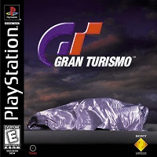

Gran Turismo

Gran Turismo é um jogo eletrônico de simulação de corrida de 1997, publicado pela Sony Computer Entertainment para o PlayStation. Foi dirigido por Kazunori Yamauchi, produzido por Shuhei Yoshida e é o primeiro título da série.